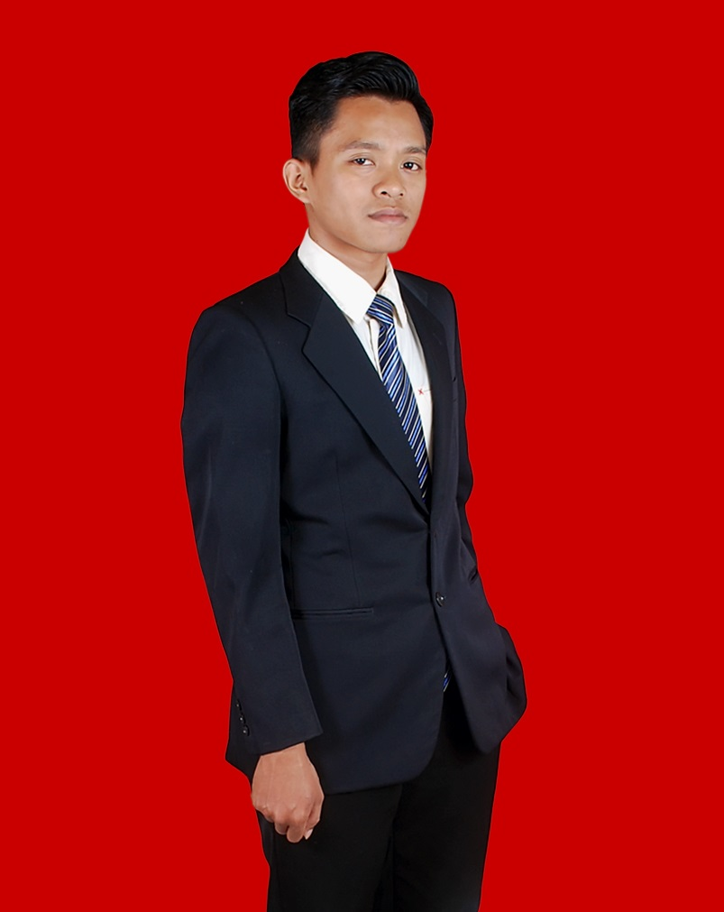

IT Support Specialist | Hardware & Sofware System & Network
Berpengalaman dalam mengelola infrastruktur IT, penyelesaian masalah (*troubleshooting*) hardware & software, manajemen jaringan, serta memberikan dukungan teknis yang efisien untuk menjaga kelancaran operasional perusahaan.
Assembly & Diagnostics PC/Laptop, Windows Server, Windows 10/11, Linux (Ubuntu/Debian), macOS, Printer & Peripheral Maintenance.
MikroTik, TCP/IP, DHCP, DNS, VPN, Router & Switch Setup, Wi-Fi Configuration, Basic Firewall & Network Troubleshooting.
Active Directory, Google Workspace Administration, Microsoft 365, Ticketing Systems (Jira/Freshdesk), Remote Support (AnyDesk/TeamViewer).
Masalah: Koneksi sering terputus dan pembagian IP address bentrok di 50+ perangkat.
Solusi: Melakukan konfigurasi ulang router MikroTik, membuat VLAN terpisah untuk staff dan tamu, serta menerapkan DHCP lease yang lebih terstruktur.
Hasil: Downtime jaringan berkurang hingga 90% dan manajemen lalu lintas data lebih efisien.
Masalah: Permintaan bantuan IT dari karyawan tidak terdeteksi dan penanganan sering terlambat.
Solusi: Membangun dan mengonfigurasi alur kerja *Helpdesk Ticketing System* serta membuat dokumentasi panduan mandiri (SOP/Knowledge Base).
Hasil: Waktu respons rata-rata (*Response Time*) membaik dari 2 jam menjadi 15 menit.
Masalah: Penyiapan komputer baru untuk karyawan membutuhkan waktu terlalu lama jika dilakukan secara manual.
Solusi: Membuat *system image* dengan OS, antivirus, dan aplikasi standar perusahaan untuk instalasi massal secara cepat.
Hasil: Memangkas waktu *deployment* dari 3 jam per unit menjadi hanya 30 menit per unit.